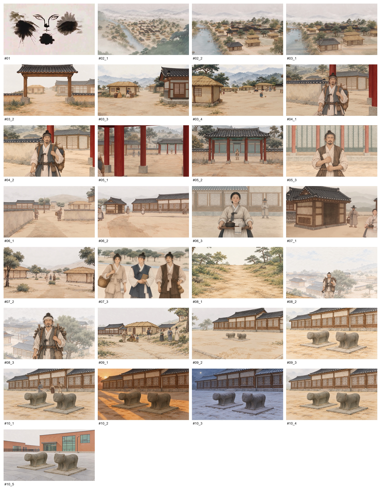

Story · 04
Higgsfield 영상·편집
Blender 카메라 가이드와 스타일 프레임을 바탕으로 인물의 작은 몸짓과 길을 따라가는 움직임을 생성하고, 장면의 순서와 길이를 편집했습니다.
스타일 프레임
-

#01마을 전경 -
#02장사꾼 -
#03농민 -
#04찬모 -
#05민가와 골목 -
#06주민 삼총사 -
#07나무꾼 -
#08두 석사자 -
#09현재의 석사자